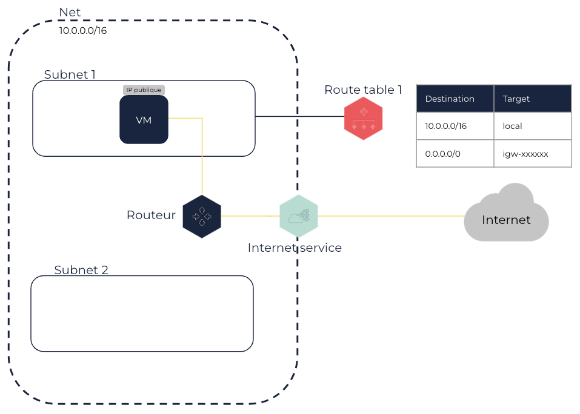

À propos des internet services
Les internet services permettent aux machines virtuelles (VM) dans un Net d’être connectées à Internet de manière directe. Les internet services peuvent être utilisés comme target dans les route tables pour le trafic réseau dirigé vers Internet.
Un internet service est un composant que vous pouvez attacher à un Net pour permettre une communication directe entre vos VM dans ce Net et Internet. Pour cela :
-
Vous devez créer une route dans la route table d’un ou plusieurs Subnets dirigeant le trafic Internet vers l’internet service.
-
Les VM dans ces Subnets doivent avoir une IP publique associée.
-
Vous devez ajouter les règles appropriées autorisant le trafic vers et depuis Internet aux security groups utilisés pour les VM dans ces Subnets.

Les VM ayant seulement connaissance des IP privées du Net et du Subnet, l’internet service fait le Network Address Translation (NAT) pour vos VM en utilsant leur IP publique. Lorsque le trafic quitte le Subnet vers Internet, l’internet service paramètre l’adresse sur l’IP publique associée à la VM plutôt que l’IP privée de la VM. Lorsque le trafic vient d’Internet vers l’IP publique associée à une VM, l’internet service traduit cette IP publique par l’IP privée de la VM avant que le trafic arrive dans le Net, lui permettant ainsi d’accéder à la VM.
Lorsque vous créez une route vers l’internet service dans la route table d’un Subnet, vous pouvez utiliser le bloc CIDR 0.0.0.0/0 en destination pour prendre en compte toutes les destinations qui ne sont pas explicitement routées dans la route table, ou vous pouvez utiliser une plage d’IP plus petite correspondant, par exemple, aux IP publiques de votre réseau interne.
Dans un Net, la Maximum Transmission Unit (MTU) est limitée à 1500 octets par paquet dirigé vers Internet à travers un internet service.
Pages connexes